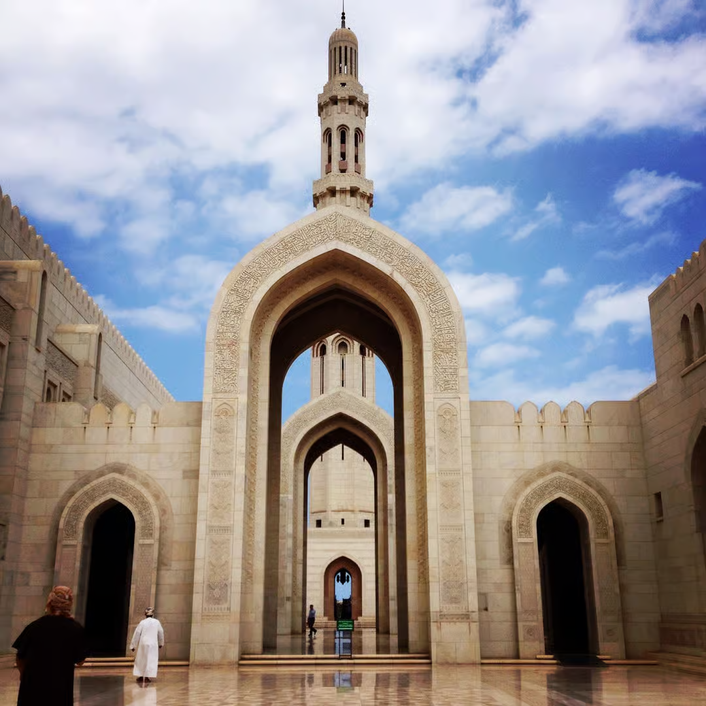
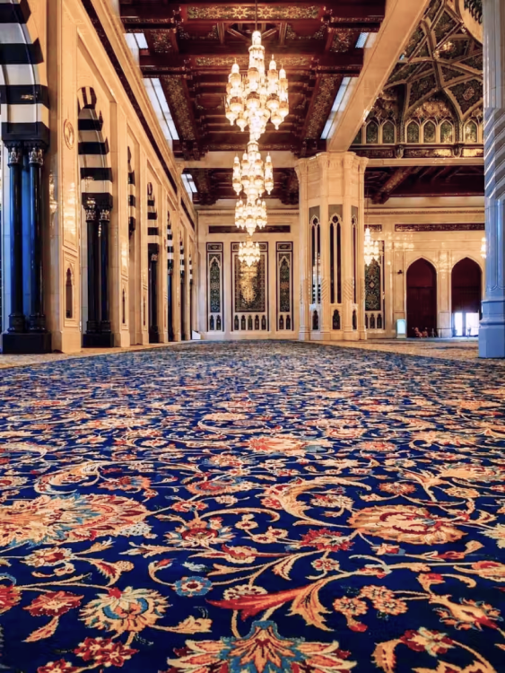
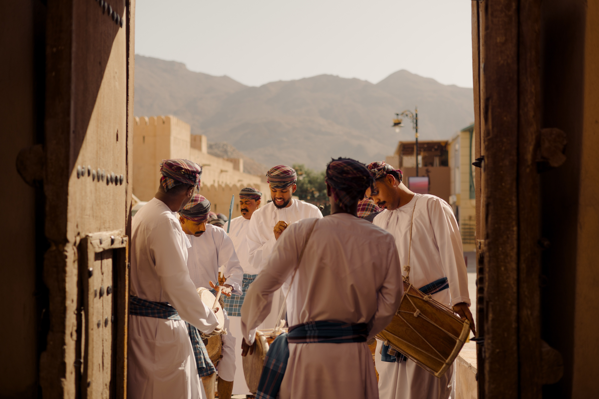
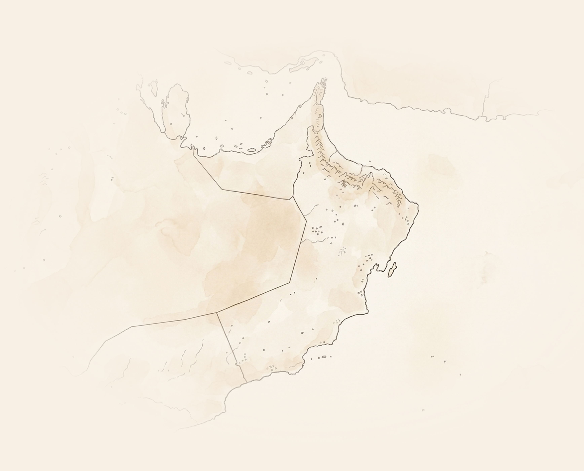
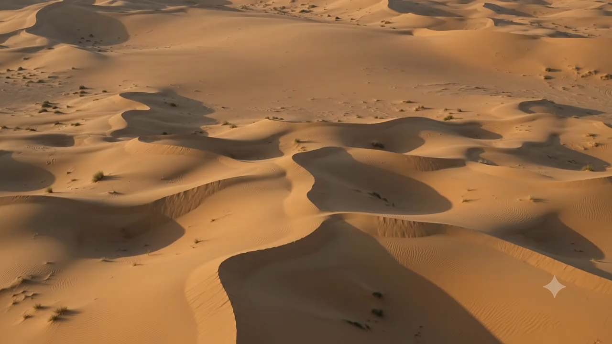

Bawshar · Muscat
Sultan Qaboos Grand Mosque
Oman's principal mosque, and the rare one that opens its doors to visitors of every faith — for three hours, every morning but Friday.

It was finished in 2001, after six years of building, because a ruler decided his country should have one great mosque of its own. It holds twenty thousand worshippers. And between eight and eleven each morning, it belongs to everybody else as well.
- Opened
in 2001 - Over 20,000
Worshippers - 4,300 m²
One-piece carpet - 90m Tallest minaret

The Essentials
- Where
- Bawshar, on Sultan Qaboos Street, about 20 minutes west of Old Muscat
- Open to visitors
- Saturday to Thursday, 8:00–11:00. Closed to visitors on Fridays
- Entry
- Free. No ticket to book in advance
- Allow
- 60 to 90 minutes, longer if the light is good
- Dress
- Arms and legs covered. Women cover their hair

What to look for
- The prayer-hall carpet — one piece, no seams, four years on the loom
- The Swarovski chandelier hanging some fourteen metres above it
- Five minarets, one for each pillar of Islam
- The marble courtyard, at its best in the low morning light
- The library and the Islamic Information Centre, both open to visitors
One carpet. No seams. Four years on the loom, and something in the order of 1.7 billion knots underfoot.
In 1992 Sultan Qaboos bin Said announced that Oman should have a grand mosque, and opened the design to competition. Ground was broken in 1995. Six years and four months later, in May 2001, the mosque opened its gates.
It is built from some 300,000 tonnes of Indian sandstone, and it borrows openly — Omani, Persian, Mughal and Egyptian ideas share the same walls without arguing about it. The five minarets stand for the five pillars of Islam: the main one rises about ninety metres, the four around it roughly half that.
The main prayer hall takes around 6,500 people and the complex about 20,000, which is most of a small town. Above the floor hangs a chandelier of Swarovski crystal, gold-plated and roughly fourteen metres tall — for a time, the largest in the world.
Beneath it lies the reason most people come. A single carpet, woven in one piece in Iran by around 600 weavers over four years: some 4,300 square metres of wool and cotton, laid without a seam anywhere in it. Until Abu Dhabi's Sheikh Zayed Mosque took the record in 2007, it was the largest carpet ever made.

A working mosque, first and always
The visiting hours exist because the rest of the day is spoken for. Five times over, the courtyard fills and empties again, and what you are walking through at nine in the morning is somebody's Tuesday.
Which is the whole reason it is worth the early start. Guides stand about inside the main hall with nothing to sell and no fee to collect — ask them anything. Oman's own tradition is Ibadi Islam, older and quieter than the branches most visitors have heard of, and the Islamic Information Centre by the eastern gate exists precisely so that people can come and ask about it.
Before you go
It is a working mosque before it is anything else, and the rules that come with that are simple, few, and taken seriously at the gate.
Hours
Saturday to Thursday, 8:00 to 11:00 in the morning, and not on Fridays. Hours shorten during Ramadan and around religious holidays, so check before you set out rather than after.
Dress
Long sleeves and long trousers or a long skirt, for everyone. Women cover their hair with a scarf. Nothing sheer, nothing tight. Scarves can usually be borrowed or bought at the entrance, but bringing your own is one less thing to do.
Shoes
Off before you step into any prayer hall — there are racks at every door. The marble courtyard is walked barefoot or shod, as you prefer, though by mid-morning it holds the heat.
Entry
Free, and there is nothing to book. Arrive close to eight if you want the main hall quiet; by half past nine the coaches have found it. Guides are on hand inside and cost nothing to ask.
Photography
Welcome, within reason. No photographs of people at prayer, and tripods or anything commercial need permission arranged in advance. Phones are fine everywhere visitors are.
Getting there
Roughly 15 minutes by taxi from Qurum and 20 to 25 from Mutrah, with a large free car park if you are driving yourself. Most Muscat half-day tours open here, which is the other reason to come early.
While you are out here
The mosque closes to visitors at eleven, which leaves the better part of a day. Drag the map, zoom in on the coast, and choose a pin for what is there — everything on it is a drive worth making.

Drag the map
where you are standing
Sultan Qaboos Grand Mosque
Bawshar, twenty minutes west of the old harbour. Mutrah Corniche and its souq, Qurum Beach, Old Muscat and the Royal Opera House are all inside half an hour of the gate.

1 hr by air from Muscat
Musandam
Fjords cut into bare rock at the top of the country, dolphins in the channel, and dhow trips out of Khasab that take most of a day.

160 kms from the grand mosque
Al-Rustaq
A fort under the Hajar wall, hot springs running below it, and the old souq town wrapped around both. Two hours west, and quiet on a weekday.
150 kms from the grand mosque
Nizwa
The round fort tower, a date souq under it, and a goat market that happens on Friday mornings and nowhere else. Get there before eight.

140 kms from the grand mosque
Wadi Shab & Sur
A boat across, an hour of walking in, then a swim through a slot canyon to a waterfall. Sur and the turtles at Ras Al Jinz are 45 minutes further on.

200 kms from the grand mosque
Wahiba Sands
Dunes the height of a building, camps in the middle of them, and the best stars you will see on this trip. Stay the night; the drive back is long.